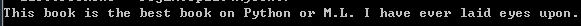
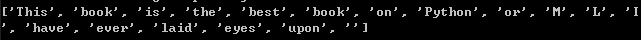
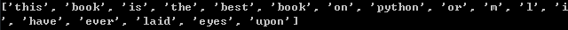

Blog
Blog
import re
regEx = re.compile('\\W*')
mySent = 'This book is the best book on Python or M.L. I have ever laid eyes upon.'
listOfTokens = regEx.split(mySent)
#输出未做任何处理的原始数据
print(mySent)

#输出作分割处理的语句
print(listOfTokens)

# 为了去掉空字符串，对每个字符串的长度进行计算，只保留长度大于0的字符串
# dealedList = [tok for tok in listOfTokens if len(tok) > 0]
# 将所有字符串都转化为小写
dealedList = [tok.lower() for tok in listOfTokens if len(tok) > 0]
#输出最终处理结果，即长度大于0的所有单词的小写形式
print(dealedList)

将数据分割封装成函数
def textParse(bigString):
import re
listOfTokens = re.split(r'\W*',bigString)
return [tok.lower() for tok in listOfTokens if len(tok) > 2]
def spamTest():
docList = []
classList = []
fullText = []
# 读取文件夹 spam 中的所有邮件，邮件的命名方式必须为 数字.txt,调用之前准备的数据处理函数，将邮件切分为单词
for i in range(1,5):
wordList = textParse(open('D:/py_work/data/email/spam/%d.txt' %i).read())
docList.append(wordList)
fullText.extend(wordList)
#垃圾邮件标记为1
classList.append(1)
wordList = textParse(open('D:/py_work/data/email/ham/%d.txt' %i).read())
docList.append(wordList)
fullText.extend(wordList)
# 正常邮件标记为0
classList.append(0)
#邮件处理之后，形成单词，创建一个单词不重复的列表
vocabList = bytes.createVocabList(docList)
# 本例中共有8封邮件,每种邮件各4封,将其从0到7进行编号
trainingSet = list(range(8))
testSet = []
# 随机选择2封邮件作为测试集
for i in range(2):
# 从0到8之间随机选择2个数
randIndex = int(random.uniform(0,len(trainingSet)))
# 将随机生成的2个编号对应的邮件插入到测试列表中
testSet.append(trainingSet[randIndex])
# 删除训练集中已经加入到测试集中的邮件
del(trainingSet[randIndex])
初始化测试集向量
trainMat = []
# 初始化测试集邮件类别
trainClasses = []
for docIndex in trainingSet:
#不考虑词集中某个特征出现的次数，可以描述为词集模型
#词表到向量的转化
trainMat.append(bytes.setOfWords2Vec(vocabList,docList[docIndex]))
trainClasses.append(classList[docIndex])
#朴素贝叶斯分类器训练函数，分别计算垃圾邮件和正常邮件的概率
p0v,p1v,pSpam = bytes.trainNBO(np.array(trainMat),np.array(trainClasses))
errorCount = 0
# 对测试集进行测试
for docIndex in testSet:
wordVector = bytes.setOfWords2Vec(vocabList,docList[docIndex])
# 将刚刚计算出的概率进行比较以分类
if bytes.classifiNB(np.array(wordVector),p0v,p1v,pSpam) != classList[docIndex]:
errorCount += 1
print('the errorCount rate is',float(errorCount) / len(testSet))